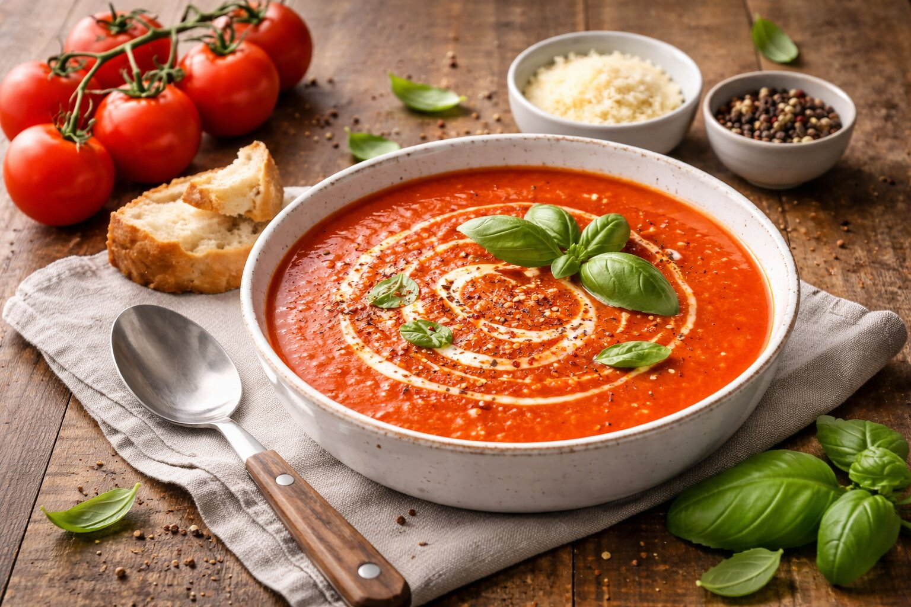

Suroviny
- 500 g paradajok (alebo 250 g rajčinovej drte)
- 500 ml vody
- 1 lyžička cukru
- Soľ podľa chuti
Postup
- Paradajky rozmixujeme alebo použijeme drť, zalejeme vodou.
- Privedieme do varu a pridáme soľ a cukor.
- Varíme 15 minút, potom rozmixujeme na hladko.